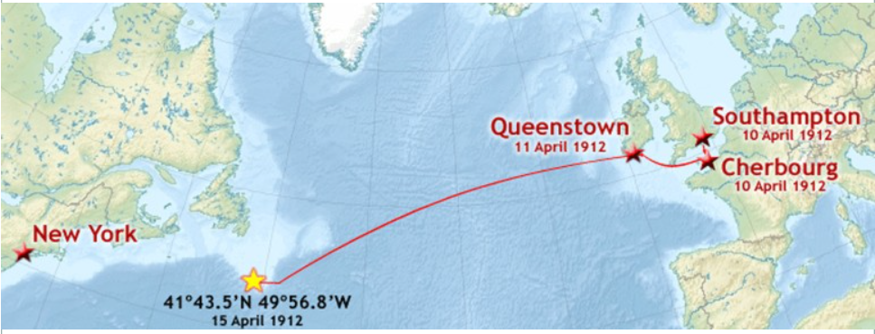

💻 준비 코드
Show code cell source
import pandas as pd
train = pd.read_csv('train.csv')
test = pd.read_csv('test.csv')
submission = pd.read_csv('gender_submission.csv')
for df in [train, test]:
df['Gender'] = df['Sex'].map({'male': 0, 'female': 1})
Show code cell source
from sklearn.model_selection import train_test_split
from sklearn.ensemble import RandomForestClassifier
from sklearn.metrics import accuracy_score
def train_and_predict(train, test):
# 데이터 준비
X = train[inc_fts] # 선택한 특성들
y = train['Survived'] # 생존 여부
X_test = test[inc_fts] # 예측해야 할 데이터의 정보들
# 학습/검증 데이터 분할
X_train, X_valid, y_train, y_valid = train_test_split(X, y, test_size=0.2, random_state=42)
# 모델 학습
model = RandomForestClassifier(random_state=42)
model.fit(X_train, y_train)
# 성능 평가
y_pred = model.predict(X_valid)
accuracy = accuracy_score(y_valid, y_pred)
print(f"Validation Score: {accuracy:.5f}")
# 테스트 데이터 예측 및 저장
y_test_pred = model.predict(X_test)
submission['Survived'] = y_test_pred
submission.to_csv('titanic_pred.csv', index=False)
2. 승선 항구가 비어 있는 두 여성은 누구지?#
데이터 과학 동아리 - 다섯 번째 모임
프롬: 다안 선배! 저번 시간에 성별 정보를 모델에 추가했더니 정확도가 크게 올랐잖아요. 10% 포인트나 향상됐다니 정말 놀라웠어요. 오늘은 또 어떤 변수를 추가해볼 예정인가요?
다안: 지난 번에 Gender 변수 하나로 정확도가 크게 향상된 것을 확인했지. 오늘은 승객들의 승선 항구를 나타내는 ‘Embarked’ 변수를 살펴볼 거야. 타이타닉호는 여러 항구에 정박하면서 승객들을 태웠거든. 각 항구마다 어떤 특성을 가진 승객들이 탑승했는지, 그리고 그것이 생존율과 어떤 관련이 있는지 분석해볼 거야.
코더블: 흥미로운데요. 각 항구별로 탑승한 승객들의 특성이 달랐다면, 생존율에도 차이가 있었을 것 같아요. 먼저 Embarked 변수가 어떤 값들을 가지고 있는지부터 확인해볼까요?
Embarked 피쳐 개요#
프롬: 승선 항구요? 타이타닉호가 어디서 출발했는지 궁금한데, Embarked 피쳐에는 어떤 값들이 있는지 확인해볼 수 있을까요?
다안: 좋은 질문이야! Embarked 변수는 승객들이 어느 항구에서 타이타닉호에 탑승했는지를 나타내는 정보야. 한번 어떤 값들이 있는지 확인해보자.
프롬: 제가 프롬프트로 한번 확인해볼게요!
# 프롬프트
Embarked 피쳐에 어떤 값들이 있는지 보여줘
코더블: 저는 코드로 확인해볼게요. unique() 함수를 사용하면 중복 없이 모든 값을 한 번에 볼 수 있어요.
print(train['Embarked'].unique())
['S' 'C' 'Q' nan]
다안: 보다시피 네 가지 값이 있어:
‘S’: Southampton(영국)
‘C’: Cherbourg(프랑스)
‘Q’: Queenstown(아일랜드)
nan: 결측치(Not a Number)
타이타닉호의 항로를 보면, Southampton에서 출발해서 Cherbourg, Queenstown을 거쳐 뉴욕으로 향하는 경로였어.

프롬: 아하! 그럼 타이타닉은 영국에서 출발해서 프랑스, 아일랜드를 거쳐 미국으로 가는 배였군요! 각 항구마다 서로 다른 나라의 사람들이 탑승했겠네요. 그런데 결측치라는 건 뭔가요? 기록이 없다는 뜻인가요?
다안: 맞아. 결측치란 데이터가 누락된 경우를 말해. 어떤 이유에서든 일부 승객들의 승선 항구 정보가 기록되지 않은 거지. 데이터 분석에서는 이런 결측치를 어떻게 처리할지가 중요한 문제 중 하나야.
코더블: 결측치는 프로그래밍할 때도 자주 문제가 되는데요. 값이 없으면 코드가 오류를 일으키거나 계산 결과가 이상해질 수 있어요. 이런 누락된 값들을 어떻게 채우느냐에 따라 나중에 모델 결과도 달라질 수 있죠?
다안: 정확해! 데이터 전처리에서 결측치 처리는 정말 중요한 단계야. 어떻게 처리하느냐에 따라 모델의 성능이 크게 달라질 수 있지.
가장 간단한 방법은 결측치가 있는 행을 제거하는 거지만, 그러면 귀중한 데이터를 잃을 수 있어. 그래서 보통은 적절한 값으로 대체하는 방법을 많이 사용해.
출발지별 생존율 분석#
프롬: 그렇다면 각 항구에서 탑승한 승객들의 생존율은 어땠을까요? 혹시 특정 항구에서 탑승한 승객들의 생존 확률이 더 높았나요?
다안: 좋은 질문이야! 각 항구에서 탑승한 승객들의 수와 생존율을 분석해보자.
프롬: 그럼 한번 프롬프트로 확인해볼게요!
# 프롬프트
출발지(Embarked)별 승객 수와 생존율을 계산해줘
코더블: 저는 groupby 함수를 사용해서 Embarked 값별로 그룹을 나누고, 승객 수와 생존율을 계산해볼게요.
embarked_stats = train.groupby('Embarked')['Survived'].agg(['count', 'mean'])
embarked_stats
| count | mean | |
|---|---|---|
| Embarked | ||
| C | 168 | 0.553571 |
| Q | 77 | 0.389610 |
| S | 644 | 0.336957 |
다안: 결과를 보면 흥미로운 패턴이 보이네:
승객 분포:
Southampton(S)에서 가장 많은 644명이 승선했어
Cherbourg(C)에서 168명이 승선했고
Queenstown(Q)에서는 가장 적은 77명이 승선했어
그리고 결측치(NaN)가 2명이 있네
생존율:
Cherbourg 승선객의 생존율이 55.4%로 가장 높아
Queenstown 승선객의 생존율은 39.0%야
Southampton 승선객의 생존율은 33.7%로 가장 낮아
프롬: 와, 탑승 항구에 따라 생존율이 이렇게 차이가 나다니 놀라워요! Cherbourg에서 탑승한 승객들의 생존율이 Southampton보다 20% 포인트 이상 높네요. 왜 이런 차이가 생겼을까요?
다안: 여러 가지 이유가 있을 수 있어. Cherbourg는 프랑스의 부유한 항구도시였어. 그래서 이곳에서 승선한 승객들 중 상당수가 1등실을 이용했을 가능성이 높아. 이전 분석에서 객실 등급과 생존율이 관련이 있다는 걸 확인했잖아? 반면 Southampton은 가장 많은 승객이 탑승한 곳으로, 다양한 계층의 사람들이 섞여 있었을 거야.
코더블: 또 다른 가능성은 승선 순서와 관련이 있을 수도 있어요. Southampton이 첫 번째 항구였으니 그곳에서 탑승한 승객들은 배의 내부 깊숙이 위치한 객실을 배정받았을 수도 있고, 나중에 탑승한 승객들은 상대적으로 출구와 가까운 객실에 배정됐을 수도 있죠. 그게 침몰 상황에서 탈출 가능성에 영향을 미쳤을 수 있어요.
프롬: 아! 그럼 지금 살펴본 각 항구별 생존율 차이가 실제로는 객실 등급 때문이었을 수도 있겠네요. Cherbourg에서 탑승한 사람들이 더 부유해서 더 좋은 객실을 이용했고, 그래서 생존율이 높았을 수 있겠군요!
결측치의 수 확인#
프롬: 그런데 NaN 값이 있다는 건 몇몇 승객들의 승선 항구 정보가 누락됐다는 거잖아요. 정확히 몇 명이나 그런 건가요? 그리고 이런 결측치는 어떻게 처리해야 하나요?
다안: 좋은 질문이야! 먼저 결측치가 정확히 몇 개나 있는지 train 데이터와 test 데이터 각각에서 확인해보자.
프롬: 프롬프트로 알아볼게요!
# 프롬프트
train과 test의 Embarked 결측치 개수를 알려줘
코더블: 저는 isnull() 함수와 sum() 함수를 사용해서 결측치 개수를 계산해볼게요.
print(f"train 데이터의 Embarked 결측치 개수: {train['Embarked'].isnull().sum()}")
print(f"test 데이터의 Embarked 결측치 개수: {test['Embarked'].isnull().sum()}")
train 데이터의 Embarked 결측치 개수: 2
test 데이터의 Embarked 결측치 개수: 0
다안: 결과를 보니 train 데이터에는 2개, test 데이터에는 0개의 결측치가 있네. train 데이터의 결측치 비율은 전체 891명 중 2명으로 약 0.2%에 불과해. 굉장히 적은 비율이지만, 정확한 예측을 위해서는 이 결측치들도 적절히 처리하는 게 좋아.
프롬: 아, 그럼 train 데이터에만 결측치가 있고 test 데이터에는 없군요. 이 결측치가 있는 두 승객은 누구인지 궁금해요. 어떤 특별한 이유가 있었을까요?
결측치의 비밀 추적하기#
다안: 그래, 이제 승선 항구 정보가 누락된 두 승객의 정보를 자세히 살펴보자. 이들이 어떤 사람들이었는지 알면 결측치를 어떻게 처리할지 더 좋은 결정을 내릴 수 있을 거야.
프롬: 그 승객들의 정보를 확인해볼게요!
# 프롬프트
Embarked가 결측치인 승객들의 정보를 보여줘
코더블: 저는 다음 코드로 결측치인 행만 선택해서 확인해볼게요.
train[train['Embarked'].isnull()]
| PassengerId | Survived | Pclass | Name | Sex | Age | SibSp | Parch | Ticket | Fare | Cabin | Embarked | Gender | |
|---|---|---|---|---|---|---|---|---|---|---|---|---|---|
| 61 | 62 | 1 | 1 | Icard, Miss. Amelie | female | 38.0 | 0 | 0 | 113572 | 80.0 | B28 | NaN | 1 |
| 829 | 830 | 1 | 1 | Stone, Mrs. George Nelson (Martha Evelyn) | female | 62.0 | 0 | 0 | 113572 | 80.0 | B28 | NaN | 1 |
다안: 흥미로운 정보들이 보이네! 이 두 승객의 공통점과 차이점을 정리해보면:
공통점:
두 승객 모두 1등실 여성 승객이야
운임이 모두 80파운드로 정확히 동일해
같은 티켓 번호(PC 17755)를 가지고 있어
두 승객 모두 생존했어
둘 다 가족(SibSp=0, Parch=0)과 함께 타지 않았어
차이점:
다른 성(last name)을 가지고 있어 (Stone, Icard)
나이는 38세(Icard)와 62세(Stone)로 24살 차이가 나
프롬: 우와! 이거 마치 추리 소설 같아요! 같은 티켓을 썼고, 운임도 똑같고… 근데 성이 다르니 가족은 아닐 것 같고… 나이 차이도 꽤 나고… 이 두 사람은 도대체 어떤 관계였을까요? 너무 궁금해요!
다안: 흥미로운 질문이야! 1912년 타이타닉호가 항해하던 시절에는 부유한 여성이 혼자 여행하는 경우가 드물었어. 두 사람의 관계에 대해 여러 가지 가능성을 생각해볼 수 있겠지.
이런 추리는 데이터 분석을 더 재미있게 만들어주기도 하지만, 실제적인 도움도 줘. 나중에 우리가 이 두 승객의 결측치를 어떻게 처리할지 결정할 때, 그들이 같은 항구에서 승선했을 거라는 점은 중요한 단서가 될 거야.
생각해보기
이 두 여성의 관계는 무엇이었을까요? 다음과 같은 가능성들을 생각해볼 수 있습니다:
부유한 여성과 그의 여행 동반자(companion)
귀부인과 그의 가정교사 또는 개인비서
친구 사이였을까요? 아니면 다른 관계였을까요?
여러분은 어떤 관계였을 것 같나요?
코더블: 이런 분석은 단순한 호기심을 넘어서 실제 데이터 처리에도 도움이 돼요. 이 두 승객이 함께 여행했다면, 분명히 같은 항구에서 승선했을 테니까요. 그러므로 둘 다 같은 값으로 결측치를 채워야 할 것 같아요.
1등석 승객들의 승선 항구 분석#
프롬: 그럼 두 사람이 어떤 항구에서 탑승했을지 어떻게 알 수 있을까요? 단서가 있을까요?
다안: 좋은 질문이야! 이 두 승객이 1등석을 이용했다는 점에 주목해보자. 1등석 승객들은 주로 어느 항구에서 승선했는지 확인하면, 이 두 승객의 승선 항구를 추정하는 데 도움이 될 거야.
프롬: 한번 1등석 승객들의 승선 항구를 확인해볼게요!
# 프롬프트
Pclass가 1인 승객들의 Embarked 값이 몇 명인지 세어 줘
코더블: 저는 다음 코드로 확인해볼게요. value_counts() 메서드를 사용하면 각 값별 개수를 쉽게 구할 수 있어요.
train[train['Pclass'] == 1]['Embarked'].value_counts()
Embarked
S 127
C 85
Q 2
Name: count, dtype: int64
다안: 결과를 보면 1등석 승객들의 승선 패턴이 명확하게 나타나네:
Southampton(S)에서 127명이 승선했어
Cherbourg(C)에서 85명이 승선했어
Queenstown(Q)에서는 단 2명만 승선했어
이 패턴은 우리의 결측치 승객들이 어느 항구에서 승선했을지 추정하는 데 중요한 단서가 돼. Queenstown에서는 거의 1등석 승객이 없었으니 이 두 승객이 그곳에서 탑승했을 가능성은 매우 낮아 보여.
프롬: 그럼 Southampton이나 Cherbourg 중 하나겠네요. Southampton에서 더 많은 1등석 승객이 탑승했으니, 이 두 승객도 Southampton에서 탑승했을 가능성이 더 높을 것 같아요!
코더블: 음, 그렇게만 볼 수는 없을 것 같아요. 숫자로만 보면 Southampton의 1등석 승객이 많지만, 비율로 따지면 좀 다를 수도 있어요. Cherbourg에서 탑승한 승객들 중에는 1등석 비율이 더 높을 수도 있으니까요. 아까 승선 항구별 생존율을 봤을 때, Cherbourg 승객의 생존율이 훨씬 높았잖아요. 그건 어쩌면 1등석 승객 비율이 높았기 때문일 수도 있지 않을까요?
둘 다 좋은 의견을 제시했어. 실제로 데이터를 분석할 때는 이렇게 여러 관점에서 생각해보는 게 중요해. 우리가 가진 정보만으로는 두 가지 가능성이 모두 있어 보이지만, 일단 통계적으로 더 가능성이 높은 쪽을 선택해야 할 때가 있지. 결측치를 처리하는 건 때로는 이런 추정과 결정이 필요한 과정이야.
프롬: 아하! 그럼 항구별 생존율 차이가 사실은 객실 등급 때문이었을 수도 있겠네요. 그래도 수치상으로는 Southampton에서 더 많은 1등석 승객이 탑승했으니, 확률적으로는 여전히 Southampton이 더 가능성이 높아 보여요.
결측치 처리하기#
다안: 자, 이제 우리가 수집한 단서들을 종합해볼까? 두 승객이 함께 여행했고 같은 항구에서 승선했을 것이라는 점, 그리고 1등석 승객 분포를 봤을 때 어느 쪽이 더 가능성이 높아 보여? 결측치는 어떻게 채우는 게 좋을까?
프롬: 음… 두 가지 가능성이 있지만, 더 많은 1등석 승객이 Southampton에서 탑승했다는 게 결정적인 단서인 것 같아요. 저는 ‘S’로 채우는 게 좋을 것 같아요!
코더블: 저도 동의해요. Cherbourg의 가능성도 있지만, 절대적인 숫자로는 Southampton이 더 높아 보여요. 127명 대 85명이니까요. 결측치를 처리할 때는 가장 가능성이 높은 값으로 채우는 게 일반적인 방법이라고 알고 있어요.
다안: 좋아, 그럼 의견이 모였네. 두 승객의 결측치를 ‘S’로 채워넣도록 하자.
프롬: 그럼 결측치를 ‘S’로 채워볼게요!
# 프롬프트
1. Embarked 값이 비어 있는 승객들의 값을 'S'로 채워 줘
2. PassengerId가 62 또는 830인 승객들의 정보를 보여 줘
코더블: 저는 fillna 메서드를 사용해서 결측치를 ‘S’로 채워보겠습니다. 이 메서드는 결측치(NaN)를 지정한 값으로 대체해주는 함수예요.
train['Embarked'] = train['Embarked'].fillna('S')
train[train['PassengerId'].isin([62, 830])]
| PassengerId | Survived | Pclass | Name | Sex | Age | SibSp | Parch | Ticket | Fare | Cabin | Embarked | Gender | |
|---|---|---|---|---|---|---|---|---|---|---|---|---|---|
| 61 | 62 | 1 | 1 | Icard, Miss. Amelie | female | 38.0 | 0 | 0 | 113572 | 80.0 | B28 | S | 1 |
| 829 | 830 | 1 | 1 | Stone, Mrs. George Nelson (Martha Evelyn) | female | 62.0 | 0 | 0 | 113572 | 80.0 | B28 | S | 1 |
다안: 좋아! 이제 두 승객의 Embarked 값이 NaN에서 ‘S’로 변경된 것을 확인할 수 있어. 이렇게 하면 train 데이터의 Embarked 결측치가 모두 처리된 거야.
프롬: 데이터 분석이 정말 탐정 일처럼 느껴져요! 작은 단서들을 모아서 숨겨진 이야기를 찾아내는 것 같아요. 너무 재미있어요!
다안: 맞아, 데이터 분석은 종종 탐정 일과 비슷해. 주어진, 때로는 불완전한 정보들로부터 의미 있는 패턴과 이야기를 찾아내는 과정이니까.
인코딩 방식 비교#
다안: 이제 Embarked 변수를 우리 머신러닝 모델이 이해할 수 있는 숫자 형태로 변환해야 해. 이것을 ‘인코딩(encoding)’이라고 해.
프롬: 아, 지난 번에 남성을 0, 여성을 1로 바꾼 것처럼요?
다안: 맞아! 그때는 레이블 인코딩(Label Encoding)이라는 방식을 사용했어. 하지만 Embarked는 세 개의 카테고리(S, C, Q)가 있고, 이들 사이에는 크기나 순서 관계가 없어. 이런 경우에는 원-핫 인코딩(One-Hot Encoding)이라는 방식이 더 적합해.
다안: 두 인코딩 방식의 차이를 설명해줄게. 레이블 인코딩은 각 카테고리에 숫자를 할당하는 방식인데, 이렇게 하면 모델이 숫자 크기에 의미가 있다고 오해할 수 있어.
예를 들어, Southampton=0, Cherbourg=1, Queenstown=2와 같이 변환하면, 모델은 Queenstown이 Southampton보다 “두 배 더 중요하다”고 잘못 해석할 수 있지. 항구 사이에는 그런 순서나 크기 관계가 없는데도 말이야.
반면 원-핫 인코딩은 각 카테고리마다 별도의 컬럼을 만들어서 해당되면 1, 아니면 0으로 표시하는 방식이야. 이렇게 하면 각 항구를 완전히 독립적인 특성으로 처리할 수 있어.
원-핫 인코딩을 사용하면 각 항구가 독립적인 변수로 처리돼. 이제 pandas의 get_dummies 함수를 사용해서 Embarked를 원-핫 인코딩 해보자.
프롬: 원-핫 인코딩으로 변환해볼게요!
# 프롬프트
train과 test의 Embarked 피쳐를 One-Hot Encoding으로 추가해줘
코더블: 저는 pandas의 get_dummies 함수를 사용해서 원-핫 인코딩을 구현해볼게요. 이 함수는 범주형 변수를 자동으로 이진(0과 1) 더미 변수로 변환해주는 편리한 기능이에요.
embarked_dummies_train = pd.get_dummies(train['Embarked'], prefix='Embarked')
train = pd.concat([train, embarked_dummies_train], axis=1)
embarked_dummies_test = pd.get_dummies(test['Embarked'], prefix='Embarked')
test = pd.concat([test, embarked_dummies_test], axis=1)
train[['PassengerId', 'Embarked', 'Embarked_C', 'Embarked_Q', 'Embarked_S']].head()
| PassengerId | Embarked | Embarked_C | Embarked_Q | Embarked_S | |
|---|---|---|---|---|---|
| 0 | 1 | S | False | False | True |
| 1 | 2 | C | True | False | False |
| 2 | 3 | S | False | False | True |
| 3 | 4 | S | False | False | True |
| 4 | 5 | S | False | False | True |
프롬: 오, 새로운 컬럼들이 생겼네요! ‘Embarked_S’, ‘Embarked_C’, ‘Embarked_Q’ 이렇게요. 그러니까 첫 번째 승객은 Southampton에서 탑승했으니 ‘Embarked_S’가 1이고 나머지는 0인 거군요?
다안: 정확해! 이렇게 원-핫 인코딩을 하면 각 항구를 별도의 컬럼으로 표현할 수 있어. 이 방식은 항구 간에 크기 관계가 생기는 것을 방지하고, 각 항구의 영향을 독립적으로 분석할 수 있게 해줘.
One-Hot Encoding의 장단점
장점:
범주형 변수들 사이에 크기 관계가 생기는 것을 방지할 수 있습니다
각 범주가 독립적으로 처리되어 모델이 더 정확한 패턴을 학습할 수 있습니다
단점:
범주의 종류가 많으면 생성되는 피쳐의 수도 많아집니다
메모리 사용량이 증가하고 학습 시간이 길어질 수 있습니다
과적합의 위험이 증가할 수 있습니다
모델 학습과 예측#
다안: 이제 원-핫 인코딩으로 생성된 새로운 피쳐들을 우리 모델에 추가해보자. 이전에 사용했던 변수들과 함께 이 새로운 변수들을 사용하면 예측 정확도가 어떻게 달라질지 확인해볼 거야.
프롬: 프롬: 이제 승선 항구 변수들을 inc_fts 리스트에 추가해볼게요!
# 프롬프트
승선 항구 관련 피쳐들(Embarked_C, Embarked_Q, Embarked_S)을 inc_fts에 추가해줘
코더블: 저도 승선 항구 관련 변수들을 기존 변수 리스트에 추가해볼게요.
inc_fts = ['Pclass', 'Age', 'SibSp', 'Parch', 'Fare']
inc_fts += ['Gender']
inc_fts += ['Embarked_C', 'Embarked_Q', 'Embarked_S']
print(inc_fts)
['Pclass', 'Age', 'SibSp', 'Parch', 'Fare', 'Gender', 'Embarked_C', 'Embarked_Q', 'Embarked_S']
다안: 좋아! 이제 우리는 총 9개의 변수를 사용하게 됐어:
처음에 사용했던 5개의 수치형 변수(Pclass, Age, SibSp, Parch, Fare)
지난 시간에 추가한 Gender 변수
오늘 추가한 3개의 항구 관련 변수(Embarked_C, Embarked_Q, Embarked_S)
다안: 이 변수들을 사용해서 모델을 학습시켜보자. 챕터 시작부분에 ‘준비 코드’로 미리 정의해둔 train_and_predict 함수를 사용하면 모델 학습부터 캐글 제출 파일 생성까지 한 번에 할 수 있어.
train_and_predict(train, test)
Validation Score: 0.82123
프롬: 와! 모델의 Validation Score가 0.82123으로 나왔네요. 그런데 이전에 Gender만 추가했을 때와 같은 점수인데요?
다안: 맞아, 검증 세트에서의 점수는 이전과 동일하네. 하지만 실제 test 데이터에 대한 예측 결과는 달라질 수 있어. 캐글에 제출해봐야 정확한 차이를 알 수 있을 거야.
프롬: 제가 방금 캐글에 제출해봤어요! 점수가 0.74880이 나왔어요. 이전에 Gender만 사용했을 때는 0.73444였으니, 승선 항구 정보를 추가했더니 약간 상승했네요. 418명 중에 313명을 맞췄다는 의미니까, 이전보다 약 6명 더 정확하게 예측한 셈이에요.
다안: 좋은 소식이네! 승선 항구 정보가 생존 예측에 도움이 된다는 걸 확인했어. 지금까지의 결과를 표로 정리하면 이렇게 돼:
버전 |
피쳐 개수 |
Val. Score |
Public Score |
맞은 사람 수 |
설명 |
|---|---|---|---|---|---|
1.3 |
5개 |
0.73184 |
0.63397 |
265명 |
5개의 numeric 피쳐 사용 |
2.1 |
6개 |
0.82123 |
0.73444 |
307명 |
Gender 피쳐 추가 |
2.2 |
9개 |
0.82123 |
0.74880 |
313명 |
승선 항구 정보 추가 |
다안: 이 결과에서 몇 가지 중요한 인사이트를 얻을 수 있어:
Gender 변수의 추가로 42명의 승객에 대한 예측이 개선됐어 - 이는 성별이 생존에 매우 결정적인 요소였음을 보여줘
Embarked 관련 변수들을 추가하니 6명의 예측이 더 개선됐어 - 승선 항구도 유의미한 영향을 미친 것이지
검증 점수는 동일하지만 실제 테스트 데이터에 대한 예측은 달라졌어 - 이는 변수 추가의 효과가 데이터 세트마다 다르게 나타날 수 있다는 점을 시사해
프롬: 성별이 정말 중요한 변수였네요. 그에 비하면 승선 항구는 상대적으로 영향이 작았지만, 그래도 6명이나 더 정확하게 예측할 수 있게 해줬어요!
다안: 맞아, 그리고 앞서 분석에서 보았듯이, Cherbourg에서 승선한 승객들의 생존율(55.4%)이 다른 항구보다 높았던 것이 이런 예측 정확도 향상에 기여했을 거야. 특히 Cherbourg에서 승선한 승객들 중 1등실 승객의 비율이 높았다는 점도 중요한 요인이었을 거야.
프롬: 진짜 재밌어요! 타이타닉 데이터에서 숨겨진 패턴을 하나씩 발견하는 것 같아요. 다음엔 또 어떤 변수를 살펴볼 건가요?
다안: 다음 시간에는 요금(Fare) 데이터를 자세히 분석해볼 거야. 요금은 객실 등급과 밀접한 관련이 있을 테니까, 그 관계가 생존율에 어떤 영향을 미쳤는지 살펴볼 거야. 특히 test 데이터에 요금 정보가 누락된 승객이 있어서, 이 결측치를 어떻게 처리하면 좋을지도 함께 고민해볼 거야.
프롬: 와, 기대돼요! 데이터 속에 숨겨진 이야기들을 계속 발견해가는 게 너무 재밌어요. 승객들의 객실 등급이나 승선 항구에 따라 생존 확률이 달랐다는 사실도 흥미로웠는데, 요금 정보는 또 어떤 패턴을 보여줄지 궁금해요!
코더블: 저는 특히 결측치 처리 방법을 배우는 게 기대돼요. 실제 데이터 분석에서는 결측치가 항상 있기 마련이니까요. 다양한 결측치 처리 전략을 실습해볼 수 있을 것 같아요.
다안: 그래, 다음 시간도 기대해! 오늘은 승선 항구 정보를 분석하고 모델에 추가함으로써 예측 정확도를 향상시키는 데 성공했어. 그리고 결측치 처리의 중요성도 배웠지. 다음 시간에도 이런 기법들을 활용해서 모델을 더욱 발전시켜 나가보자!
직접 해보기
결측치 처리와 인코딩에 대한 이해를 높이기 위해 다음 실습을 해보세요:
결측치 처리 실험
# 결측치를 'C'로 채우기 train['Embarked'] = train['Embarked'].fillna('C') # 또는 'Q'로 채우기 train['Embarked'] = train['Embarked'].fillna('Q')
각각의 경우 모델의 성능이 어떻게 달라지는지 비교해보세요. 왜 그런 차이가 났을까요?
다른 방식의 인코딩 시도
레이블 인코딩으로 처리해보기
train['Embarked_Label'] = train['Embarked'].map({'S': 0, 'C': 1, 'Q': 2})
원-핫 인코딩과 비교했을 때 어떤 차이가 있나요?
승선 항구와 다른 변수의 관계 분석
# 각 항구별 평균 요금 확인 train.groupby('Embarked')['Fare'].mean() # 각 항구별 객실 등급 분포 확인 pd.crosstab(train['Embarked'], train['Pclass'])
이 결과들은 앞서 본 생존율 차이를 어떻게 설명할 수 있나요?
도전해보세요!
승선 항구와 성별을 함께 고려하면 어떤 패턴이 보일까요?
각 항구별로 나이 분포는 어떻게 다를까요?
요금과 승선 항구 사이에는 어떤 관계가 있을까요?
이러한 분석을 통해 데이터 속에 숨어있는 새로운 패턴을 발견할 수 있습니다.
프롬프트 실험하기
AI에게 분석을 요청할 때는 다양한 방식으로 프롬프트를 작성해볼 수 있습니다:
기본적인 분석 요청:
Embarked 컬럼의 값들을 보여줘
구체적인 분석 요청:
각 항구별로 1등석, 2등석, 3등석 승객의 수와 비율을 계산해줘
시각화 요청:
항구별 승객 수와 생존율을 막대그래프로 보여줘
복합적인 분석 요청:
각 항구별로 성별 분포와 평균 요금을 함께 보여주고, 이것이 생존율과 어떤 관계가 있는지 분석해줘
같은 데이터도 다양한 각도에서 분석할 수 있습니다. 여러분만의 프롬프트로 새로운 인사이트를 발견해보세요!
데이터 속 숨은 이야기
승선 항구 결측치 승객들의 실제 이야기
우리가 분석한 결측치 승객들의 실제 이야기를 찾아보았습니다!
Encyclopedia Titanica에서 이 두 승객에 대한 흥미로운 기록을 발견했습니다. 데이터에서 우리가 추측했던 것처럼, 이들은 실제로 함께 여행했던 동행이었습니다.
62세의 Stone 부인(사진)과 38세의 Miss Icard는 고용주와 가정부 관계였습니다. 둘은 Southampton에서 승선했고, 다행히 모두 생존했습니다. 특히 감동적인 것은 Stone 부인이 사망 시 Icard에게 상당한 금액의 유산과 개인 소지품을 남겼다는 기록입니다. 24년의 나이 차이를 넘어, 고용주와 가정부로 시작된 두 사람의 관계가 깊은 신뢰와 우정으로 발전했던 것 같네요.
이렇게 차가운 숫자로 이루어진 데이터 속에도 따뜻한 인간 드라마가 숨어있습니다. 우리가 분석한 결측치 처리가 단순한 데이터 작업이 아닌, 실제 존재했던 사람들의 이야기라는 점이 특별하게 다가옵니다.
더 자세한 내용이 궁금하시다면: